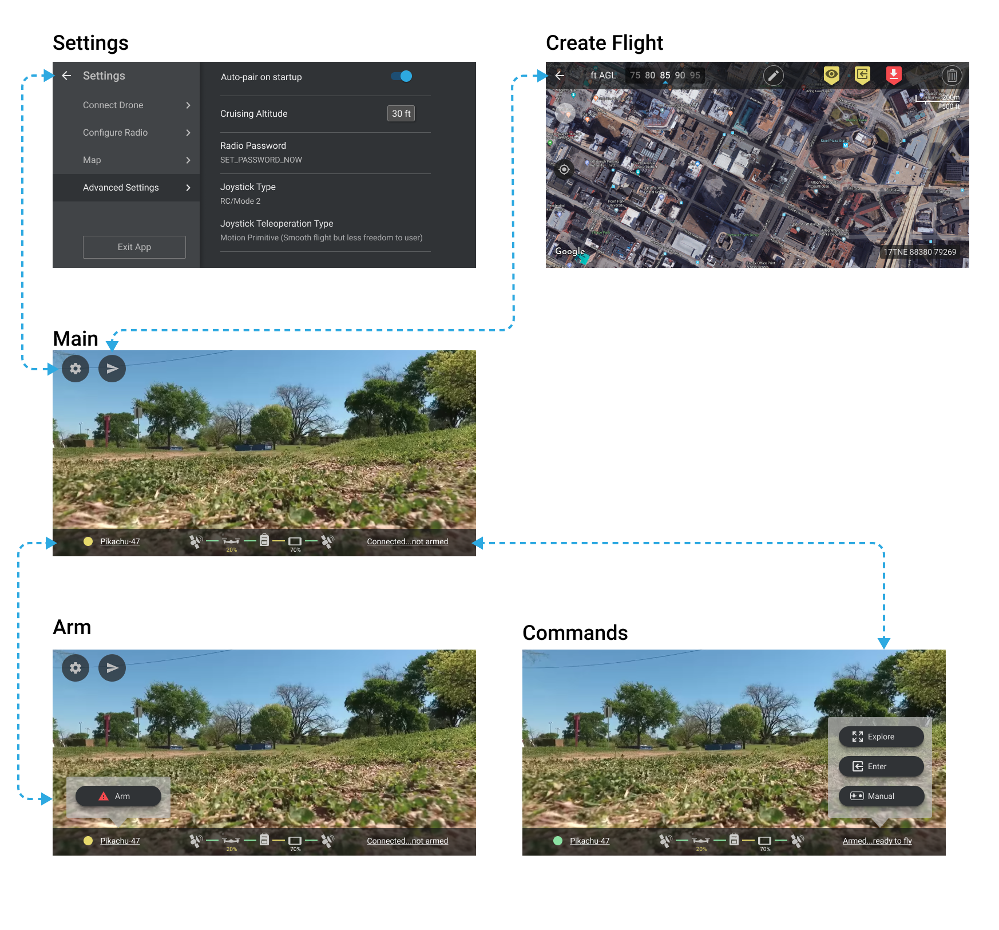
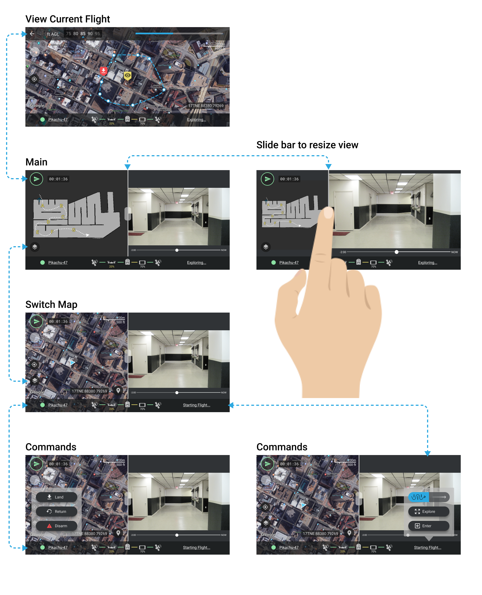

Shield.ai
2018
UX/UI Design
Shield.ai is an autonomous drone startup based in San Diego. Their hardware is used by trained specialists in the field to collect indoor and outdoor mapping data.
I designed their V1 mobile and desktop apps for their first user-facing beta launch. Most of this work was done in 6 weeks.
Mobile App
The mobile app controls the drone in the field. Although the drone flies and gathers data autonomously, some user guidance is still needed to set up the flight plan and take over via manual control if needed.
I worked closely with the lead Android engineer to define user workflows and modes.
I also set up the team with Figma and Zeplin for collaboration and design hand-off.
I helped the team organize their features into a user flow that revealed only the relevant controls needed at that moment, instead of everything on the screen at once.
The app is only used on the Samsung S8+ in horizontal layout.
The team wanted to take advantage of the large size of the screen to see both the video feed and the map at the same time, so I designed a split-screen slider that allows you to enlarge the video or map as desired, and flip between the satellite map and SLAM map easily.

Pre-Flight Setup
Flight In Progress
Split Screen
Initially the team wanted to switch between three modes (video feed, google map, slam map) on each side of the screen, but I realized that could be simplified. The pilot always uses the video feed, but would only use either the google map (for outdoor flights) or the slam map (for indoor flights).
I made a javascript prototype of the split screen feature, which could be tried on a phone.
Create Flight
There was quite a lot of back and forth over how the Create Flight feature should work.
Originally, the spec had two different flight creation modes, and you had to place the perimeter points one at a time.
I proposed simplifying it with a drawing action and different markers for indoor or outdoor. I made this prototype with javascript so the team could try it out.
There would need to be some more iteration on this, but the prototype helped get the conversation in the right direction.
Manual Mode Controls
The drones largely fly according to the preset flight plan, but sometimes human intervention may be necessary. A user can pilot the drone using onscreen joystick controls.
The engineer and I had an idea where the user could go into Manual Mode by grabbing the phone with both hands, instead of finding the button in a menu.
We also found a need for a "Paused" mode, where after using Manual Mode, the drone would hover in midair until the user selects an action.
Desktop App
I designed the first version of their desktop app for customers to download and view flight data, trim video, and organize flights into "missions".
Designed to be used full screen on a Surface Pro, the UI features card-style layouts and larger font size to be touchscreen friendly.